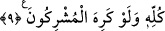

çalışması kaçınılmazdır. Çünkü nefis ile onun hevesleri sol ele mensub, Cenab-ı
Hakk’ın Celal sıfatı ve kahrının bir yansımasındandır. Ruh ile kalb ise, sağ ele mensub
Cenab-ı Hakk’ın Cemal sıfatının yansımasındandır. Kudsî hadiste ifâde buyrulduğu gibi:
“Şüphesiz ki, Allah Teâlâ kudret elinin sağını Âdem (a.s.)’ın sağ tarafına dokundur da
ondan bembeyaz gümüş gibi nesiller çıkardı ve işte bunlar cennetliktirler. Kudret
elinin solunu da Âdem (a.s.)’ın soluna dokundurdu da ondan kömür gibi simsiyah
nesiller çıkardı ve bunlar da cehennemliktirler” buyurdu.[113] Bu nedenle nefsin kalp
nurunu söndürmeğe, kalbin de nefsin ateşini söndürmeğe çalışmaları kaçınılmazdır. Her
ne kadar, kalp toprağına nefis tohumu eken ve kalbi nefisle örtmeğe çalışan inkârcılar
hoşlanmasalar da bu böyledir.
9. Müşrikler istemeseler de dinini bütün dinlere üstün kılmak için Peygamberini
hidâyet ve hak ile gönderen O’dur.
Âyetteki “hüdâ”, Kur’an veya mûcizedir. Hidâyet, doğru yola ulaşılan gerçektir. Hak
din ise Cenab-ı Hakk’ın elçisi ve ümmeti için seçmiş olduğu İslam dinidir. Buradaki
terkib, “yakıcı azab”, sıfat tamlaması gibi, sıfatlananı kendi sıfatına izafe etmek
kabilindendir. Allah Teâlâ İslam dinini, ona karşı olan bütün dinlere üstün ve yüce
kılmak için göndermiştir. Müşrikler bu üstün gelmeyi istemeseler de, Allah İslam dini
karşısında yenilmemiş ve kahra uğramamış hiçbir din bırakmamakla vaadini yerine
getirmiştir. Bundan maksad, karşısında dinlerden hiçbir din kalmayacak demek değildir,
İslamın üstün olmadığı hiçbir din olmayacak, demektir.
Secâvendî’nin Aynü’l-meânî adlı eserinde de belirttiği gibi, beş tane din vardır:
Yahudîlik, hıristiyanlık, mecûsîlik, şirk dini ve İslam.
Süheylî, Emâlî adlı kitabında, Cehennem kapılarının yedi tane olmasının sebebini
belirtirken şöyle der: Tefsirde de belirttiğimiz gibi yedi tane din biliyoruz. Bunlardan
biri Rahman olan Allah’ın dinidir, diğer altısı ise şeytan içindir. Şeytanın dini olanlar;
yahudîlik, nasranîlik, sabiîlik, puta tapıcılık, mecûsîlik ve hiçbir dinleri olmayan ve
hiçbir peygamber kabul etmeyenler ki bunlar dehrîlerdir. Dehrîler ve bir peygamber
kabul etmeyenler sanki hepsi aynı dindendirler. Yâni bunların tamamı altı çeşit dini
oluştururlar. Yedinci sınıf tevhid dininden sayılır. Bunlar cehennemin köpekleri olan
hâricîler, bütün saptırıcı bidatçılar, zâlimler, tevbe ve istiğfarsız büyük günah işlemeğe
devam edenlerdir. Bunların bir kısmı hakkında gelen tehdidler gerçekleşecektir. Allah
Teâlâ’nın afvedeceği kimseler de vardır. Dolayısiyle bunların tamamı bir kısmı
oluştururlar. Ancak, bunların ebedî olarak cehennemde kalacaklarına dâir kesin bir
hüküm yoktur. Böylece, onlar yedi sınıf olup altısı cehennemde sürekli kalacaklar, bir